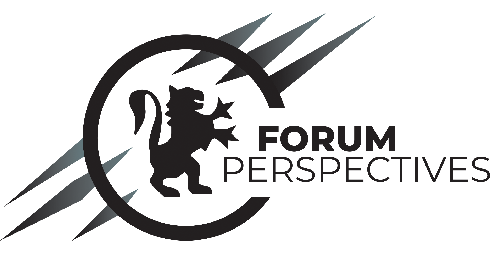

Sustainable and Civic engagement
Responsible of logistiques - Forum Perspectives
Forum Perspectives is a student association at Mines de Saint-Étienne and Centrale Lyon,
which organizes an annual forum to enable students and companies to meet. Saint-Étienne (France, 42) |

|
Citizen project
Teaching the scientific method to disadvantaged childrens as part of a citizen project at Mines Saint-Étienne. Saint-Étienne (France, 42) |

|
Project manager and initiator - Com'EcoProject manager and initiator of the «Responsible Self» project at the ecological comitee of J.-P. Vernant highschool. It's aim was to understand, communicate and greening the school canteen. Pins-Justaret (France, 31) |